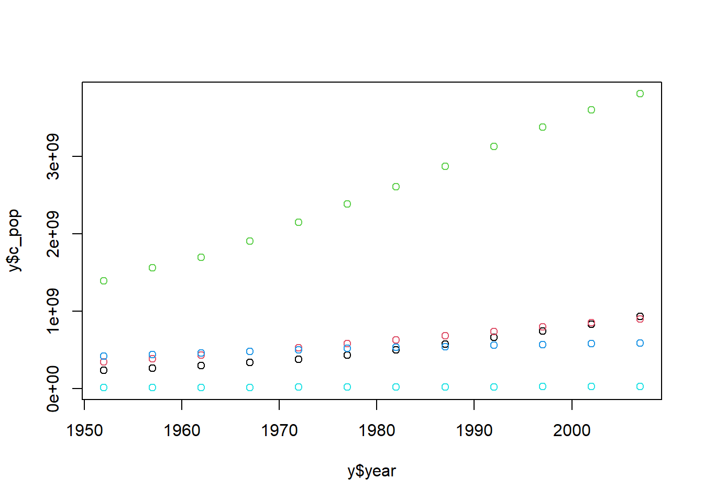

total_bill tip sex smoker day time size
1 16.99 1.01 Female No Sun Dinner 2
2 10.34 1.66 Male No Sun Dinner 3
3 21.01 3.50 Male No Sun Dinner 3
4 23.68 3.31 Male No Sun Dinner 2
5 24.59 3.61 Female No Sun Dinner 4
6 25.29 4.71 Male No Sun Dinner 4
7 8.77 2.00 Male No Sun Dinner 2
tail(tips, 7)
total_bill tip sex smoker day time size
238 32.83 1.17 Male Yes Sat Dinner 2
239 35.83 4.67 Female No Sat Dinner 3
240 29.03 5.92 Male No Sat Dinner 3
241 27.18 2.00 Female Yes Sat Dinner 2
242 22.67 2.00 Male Yes Sat Dinner 2
243 17.82 1.75 Male No Sat Dinner 2
244 18.78 3.00 Female No Thur Dinner 2
summary(tips)
total_bill tip sex smoker
Min. : 3.07 Min. : 1.000 Length:244 Length:244
1st Qu.:13.35 1st Qu.: 2.000 Class :character Class :character
Median :17.80 Median : 2.900 Mode :character Mode :character
Mean :19.79 Mean : 2.998
3rd Qu.:24.13 3rd Qu.: 3.562
Max. :50.81 Max. :10.000
day time size
Length:244 Length:244 Min. :1.00
Class :character Class :character 1st Qu.:2.00
Mode :character Mode :character Median :2.00
Mean :2.57
3rd Qu.:3.00
Max. :6.00
name age gender blood.type
1 철수 22 M A
2 춘향 20 F O
3 길동 25 M B
# 다음과 같이 한 행으로 작성할 수도 있음patients1 =data.frame(name =c("철수", "춘향", "길동"), age =c(22, 20, 25), gender =factor(c("M", "F", "M")), blood.type =factor(c("A", "O", "B")))patients1
name age gender blood.type
1 철수 22 M A
2 춘향 20 F O
3 길동 25 M B
patients$name # name 속성 값 출력
[1] "철수" "춘향" "길동"
patients[1, ] # 1행 값 출력
name age gender blood.type
1 철수 22 M A
patients[, 2] # 2열 값 출력
[1] 22 20 25
patients[3, 1] # 3행 1열 값 출력
[1] "길동"
patients[patients$name=="철수", ] # 환자 중 철수에 대한 정보 추출
name age gender blood.type
1 철수 22 M A
patients[patients$name=="철수", c("name", "age")] # 철수 이름과 나이 정보만 추출
name age
1 철수 22
head(cars) # cars 데이터 셋 확인. head 함수의 기본 기능은 앞 6개 데이터를 추출함
# patients 요소의 평균을 구해줌. 숫자 형태가 아닌 것은 평균이 구해지지 않음lapply(listPatients$patients, mean)
Warning in mean.default(X[[i]], ...): argument is not numeric or logical:
returning NA
Warning in mean.default(X[[i]], ...): argument is not numeric or logical:
returning NA
Warning in mean.default(X[[i]], ...): argument is not numeric or logical:
returning NA
$name
[1] NA
$age
[1] 22.33333
$gender
[1] NA
$blood.type
[1] NA
sapply(listPatients$no.patients, mean)
day no
3.50000 56.66667
# sapply()의 simplify 옵션을 F로 하면 lapply() 결과와 동일한 결과를 반환함sapply(listPatients$no.patients, mean, simplify = F)
$day
[1] 3.5
$no
[1] 56.66667
# 01 파일 읽고 쓰기 ## 파일 마지막 행에서 [Enter]를 누르지 않은 경우students =read.table("data_2/students1.txt", header = T, fileEncoding ="CP949", encoding ="UTF-8")# 파일 마지막 행에서 [Enter]를 누른 경우students =read.table("data_2/students2.txt", header = T, fileEncoding ="CP949", encoding ="UTF-8") # 읽은 파일의 구조 확인str(students)
'data.frame': 5 obs. of 4 variables:
$ name : chr "강서준" "김도형" "박정원" "이상훈" ...
$ korean : int 100 90 90 100 85
$ english: int 90 100 95 85 100
$ math : int 100 80 90 95 100
# 파일을 있는 형태 그대로 읽음students =read.table("data_2/students1.txt", header = T, as.is = T, fileEncoding ="CP949", encoding ="UTF-8") str(students)
'data.frame': 5 obs. of 4 variables:
$ name : chr "강서준" "김도형" "박정원" "이상훈" ...
$ korean : int 100 90 90 100 85
$ english: int 90 100 95 85 100
$ math : int 100 80 90 95 100
# 파일을 읽을 때 문장을 요인으로 인식하지 않도록 설정students =read.table("data_2/students1.txt", header = T, stringsAsFactors = F, fileEncoding ="CP949", encoding ="UTF-8") str(students)
'data.frame': 5 obs. of 4 variables:
$ name : chr "강서준" "김도형" "박정원" "이상훈" ...
$ korean : int 100 90 90 100 85
$ english: int 90 100 95 85 100
$ math : int 100 80 90 95 100
# 구분 기호는 쉼표(,), 첫 행은 header로 인식하여 파일을 있는 그대로 읽어들이면 # NA로 인해 math 요소가 문장으로 인식됨students =read.table("data_2/students3.txt", sep =",", header = T, as.is = T, fileEncoding ="CP949", encoding ="UTF-8") str(students)
'data.frame': 5 obs. of 4 variables:
$ name : chr "강서준" "김도형" "박정원" "이상훈" ...
$ korean : int 100 90 90 100 85
$ english: int 90 100 95 85 100
$ math : chr " 100" " 80" " 90" " NA" ...
# "NA" 문장을 결측값 NA로 처리하라고 해도 처리가 안됨. 정확한 문장은 NA 앞에 빈 칸이 있어야 하기 때문students =read.table("data_2/students3.txt", sep =",", header = T, as.is = T, na.strings ="NA", fileEncoding ="CP949", encoding ="UTF-8") str(students)
'data.frame': 5 obs. of 4 variables:
$ name : chr "강서준" "김도형" "박정원" "이상훈" ...
$ korean : int 100 90 90 100 85
$ english: int 90 100 95 85 100
$ math : chr " 100" " 80" " 90" " NA" ...
# "NA"로 정확하게 입력하자 결측값 NA로 처리되면서 math 요소가 모두 숫자로 인식됨students =read.table("data_2/students3.txt", sep =",", header = T, as.is = T, na.strings =" NA", fileEncoding ="CP949", encoding ="UTF-8") str(students)
'data.frame': 5 obs. of 4 variables:
$ name : chr "강서준" "김도형" "박정원" "이상훈" ...
$ korean : int 100 90 90 100 85
$ english: int 90 100 95 85 100
$ math : int 100 80 90 NA 100
# strip.white에서 빈칸을 제거하면 na.string의 기본값이 "NA"로 설정되어 math 요소가 모두 숫자로 인식됨.students =read.table("data_2/students3.txt", sep =",", header = T, as.is = T, strip.white = T, fileEncoding ="CP949", encoding ="UTF-8") str(students)
'data.frame': 5 obs. of 4 variables:
$ name : chr "강서준" "김도형" "박정원" "이상훈" ...
$ korean : int 100 90 90 100 85
$ english: int 90 100 95 85 100
$ math : int 100 80 90 NA 100
# 첫 행이 header이므로 header 옵션을 지정할 필요가 없음students =read.csv("data_2/students.csv", fileEncoding ="CP949", encoding ="UTF-8") students
name korean english math
1 강서준 100 90 100
2 김도형 90 100 80
3 박정원 90 95 90
4 이상훈 100 85 95
5 최건우 85 100 100
# 읽은 파일의 구조 확인str(students)
'data.frame': 5 obs. of 4 variables:
$ name : chr "강서준" "김도형" "박정원" "이상훈" ...
$ korean : int 100 90 90 100 85
$ english: int 90 100 95 85 100
$ math : int 100 80 90 95 100
# name 속성을 요인에서 문장으로 변경students$name =as.character(students$name) str(students)
'data.frame': 5 obs. of 4 variables:
$ name : chr "강서준" "김도형" "박정원" "이상훈" ...
$ korean : int 100 90 90 100 85
$ english: int 90 100 95 85 100
$ math : int 100 80 90 95 100
# 파일을 읽을 때 문장을 요인으로 인식하지 않도록 설정함students =read.csv("data_2/students.csv", stringsAsFactors =FALSE, fileEncoding ="CP949", encoding ="UTF-8") str(students)
'data.frame': 5 obs. of 4 variables:
$ name : chr "강서준" "김도형" "박정원" "이상훈" ...
$ korean : int 100 90 90 100 85
$ english: int 90 100 95 85 100
$ math : int 100 80 90 95 100
# 30살 미만의 남성 행 추출 characters %>%filter(age<30& gender=="M")
name age gender
1 철수 21 M
x =5if(x %%2==0) {print('x는 짝수') # 조건식이 참일 때 수행} else {print('x는 홀수') # 조건식이 거짓일 때 수행}
[1] "x는 홀수"
x =8if(x>0) {print('x is a positive value.') # x가 0보다 크면 출력} elseif(x<0) {print('x is a negative value.') # 위 조건을 만족하지 않고 x가 0보다 작으면 출력} else {print('x is zero.') # 위 조건을 모두 만족하지 않으면 출력}
[1] "x is a positive value."
x =c(-5:5)options(digits =3) # 숫자 표현 시 유효자릿수를 3자리로 설정sqrt(x)
Warning in sqrt(x): NaNs produced
[1] NaN NaN NaN NaN NaN 0.00 1.00 1.41 1.73 2.00 2.24
sqrt(ifelse(x>=0, x, NA)) # NaN이 발생하지 않게 음수면 NA로 표시
[1] NA NA NA NA NA 0.00 1.00 1.41 1.73 2.00 2.24
students =read.csv("data_2/students2.csv", fileEncoding ="CP949", encoding ="UTF-8")students # 데이터에 100 초과 값과 음수 값이 포함되어 있음.
name korean english math
1 강서준 100 90 100
2 김도형 90 120 80
3 박정원 90 95 90
4 이상훈 100 85 -100
5 최건우 85 100 100
# for 문을 이용해 구구단 2단 만들기for(i in1:9) {print(paste(2, "X", i, "=", 2*i))}
[1] "2 X 1 = 2"
[1] "2 X 2 = 4"
[1] "2 X 3 = 6"
[1] "2 X 4 = 8"
[1] "2 X 5 = 10"
[1] "2 X 6 = 12"
[1] "2 X 7 = 14"
[1] "2 X 8 = 16"
[1] "2 X 9 = 18"
# for 문을 이용해 구구단 2~9단 만들기for(i in2:9) {for(j in1:9) {print(paste(i, "X", j, "=", i*j)) }}
[1] "2 X 1 = 2"
[1] "2 X 2 = 4"
[1] "2 X 3 = 6"
[1] "2 X 4 = 8"
[1] "2 X 5 = 10"
[1] "2 X 6 = 12"
[1] "2 X 7 = 14"
[1] "2 X 8 = 16"
[1] "2 X 9 = 18"
[1] "3 X 1 = 3"
[1] "3 X 2 = 6"
[1] "3 X 3 = 9"
[1] "3 X 4 = 12"
[1] "3 X 5 = 15"
[1] "3 X 6 = 18"
[1] "3 X 7 = 21"
[1] "3 X 8 = 24"
[1] "3 X 9 = 27"
[1] "4 X 1 = 4"
[1] "4 X 2 = 8"
[1] "4 X 3 = 12"
[1] "4 X 4 = 16"
[1] "4 X 5 = 20"
[1] "4 X 6 = 24"
[1] "4 X 7 = 28"
[1] "4 X 8 = 32"
[1] "4 X 9 = 36"
[1] "5 X 1 = 5"
[1] "5 X 2 = 10"
[1] "5 X 3 = 15"
[1] "5 X 4 = 20"
[1] "5 X 5 = 25"
[1] "5 X 6 = 30"
[1] "5 X 7 = 35"
[1] "5 X 8 = 40"
[1] "5 X 9 = 45"
[1] "6 X 1 = 6"
[1] "6 X 2 = 12"
[1] "6 X 3 = 18"
[1] "6 X 4 = 24"
[1] "6 X 5 = 30"
[1] "6 X 6 = 36"
[1] "6 X 7 = 42"
[1] "6 X 8 = 48"
[1] "6 X 9 = 54"
[1] "7 X 1 = 7"
[1] "7 X 2 = 14"
[1] "7 X 3 = 21"
[1] "7 X 4 = 28"
[1] "7 X 5 = 35"
[1] "7 X 6 = 42"
[1] "7 X 7 = 49"
[1] "7 X 8 = 56"
[1] "7 X 9 = 63"
[1] "8 X 1 = 8"
[1] "8 X 2 = 16"
[1] "8 X 3 = 24"
[1] "8 X 4 = 32"
[1] "8 X 5 = 40"
[1] "8 X 6 = 48"
[1] "8 X 7 = 56"
[1] "8 X 8 = 64"
[1] "8 X 9 = 72"
[1] "9 X 1 = 9"
[1] "9 X 2 = 18"
[1] "9 X 3 = 27"
[1] "9 X 4 = 36"
[1] "9 X 5 = 45"
[1] "9 X 6 = 54"
[1] "9 X 7 = 63"
[1] "9 X 8 = 72"
[1] "9 X 9 = 81"
# 1부터 10까지의 수 중 짝수만 출력하기for(i in1:10) {if(i%%2==0) {print(i) }}
[1] 2
[1] 4
[1] 6
[1] 8
[1] 10
# 1부터 10까지의 수 중 소수 출력하기for(i in1:10) { check =0for(j in1:i) {if(i%%j ==0) { check = check+1 } }if(check ==2) { print(i) }}
[1] 2
[1] 3
[1] 5
[1] 7
students =read.csv("data_2/students2.csv", fileEncoding ="CP949", encoding ="UTF-8")students # 데이터에 100 초과 값과 음수 값이 포함되어 있음
name korean english math
1 강서준 100 90 100
2 김도형 90 120 80
3 박정원 90 95 90
4 이상훈 100 85 -100
5 최건우 85 100 100
for(i in2:4) { students[, i] =ifelse(students[, i]>=0& students[, i]<=100, students[, i], NA)}students # ifelse 문으로 2~4열 값 중 0~100 외의 값은 NA로 처리함
name korean english math
1 강서준 100 90 100
2 김도형 90 NA 80
3 박정원 90 95 90
4 이상훈 100 85 NA
5 최건우 85 100 100
# 03 사용자 정의 함수 : 원하는 기능 묶기 # x=5fa =1# 계승값을 저장할 변수while(x>1) { # x가 1보다 큰 동안 반복 fa = fa*x # x 값을 fa에 곱한 후 fa에 다시 저장 x = x-1# x 값을 1 감소 x} fa
[1] 120
fact =function(x) { # 함수의 이름은 fact, 입력은 x fa =1# 계승값을 저장할 변수while(x>1) { # x가 1보다 큰 동안 반복 fa = fa*x # x 값을 fa에 곱한 후 fa에 다시 저장 x = x-1# x 값을 1 감소 } return(fa) # 최종 계산된 fa 반환}fact(5) # 5!을 계산한 결과 출력
[1] 120
my.is.na<-function(x) { # table(is.na()) 함수를 하나로 묶은 my.is.na 함수를 만듦table(is.na(x))}my.is.na(airquality) # 이 결과는 table(is.na(airquality))와 같음.
FALSE TRUE
874 44
table(is.na(airquality))
FALSE TRUE
874 44
# 04 데이터 정제 예제 1 : 결측값 처리 # # is.na 함수를 이용해 결측값 처리하기str(airquality) # airquality 데이터의 구조를 살펴봄.
'data.frame': 153 obs. of 6 variables:
$ Ozone : int 41 36 12 18 NA 28 23 19 8 NA ...
$ Solar.R: int 190 118 149 313 NA NA 299 99 19 194 ...
$ Wind : num 7.4 8 12.6 11.5 14.3 14.9 8.6 13.8 20.1 8.6 ...
$ Temp : int 67 72 74 62 56 66 65 59 61 69 ...
$ Month : int 5 5 5 5 5 5 5 5 5 5 ...
$ Day : int 1 2 3 4 5 6 7 8 9 10 ...
# airquality 데이터에서 NA인 것은 TRUE, 아니면 FALSE로 나타냄. 데이터가 많아 head 함수로 추려냄.head(airquality)
`summarise()` has grouped output by 'continent'. You can override using the
`.groups` argument.
# A tibble: 142 × 3
# Groups: continent [5]
continent country pop_avg
<fct> <fct> <dbl>
1 Africa Algeria 19875406.
2 Africa Angola 7309390.
3 Africa Benin 4017497.
4 Africa Botswana 971186.
5 Africa Burkina Faso 7548677.
6 Africa Burundi 4651608.
7 Africa Cameroon 9816648.
8 Africa Central African Republic 2560963
9 Africa Chad 5329256.
10 Africa Comoros 361684.
# ℹ 132 more rows
`summarise()` has grouped output by 'continent'. You can override using the
`.groups` argument.
# A tibble: 142 × 3
# Groups: continent [5]
continent country pop_avg
<fct> <fct> <dbl>
1 Africa Algeria 19875406.
2 Africa Angola 7309390.
3 Africa Benin 4017497.
4 Africa Botswana 971186.
5 Africa Burkina Faso 7548677.
6 Africa Burundi 4651608.
7 Africa Cameroon 9816648.
8 Africa Central African Republic 2560963
9 Africa Chad 5329256.
10 Africa Comoros 361684.
# ℹ 132 more rows
`summarise()` has grouped output by 'year'. You can override using the
`.groups` argument.
head(y, 20)
# A tibble: 20 × 3
# Groups: year [4]
year continent c_pop
<int> <fct> <dbl>
1 1952 Africa 237640501
2 1952 Americas 345152446
3 1952 Asia 1395357351
4 1952 Europe 418120846
5 1952 Oceania 10686006
6 1957 Africa 264837738
7 1957 Americas 386953916
8 1957 Asia 1562780599
9 1957 Europe 437890351
10 1957 Oceania 11941976
11 1962 Africa 296516865
12 1962 Americas 433270254
13 1962 Asia 1696357182
14 1962 Europe 460355155
15 1962 Oceania 13283518
16 1967 Africa 335289489
17 1967 Americas 480746623
18 1967 Asia 1905662900
19 1967 Europe 481178958
20 1967 Oceania 14600414
plot(y$year, y$c_pop)
plot(y$year, y$c_pop, col = y$continent)

plot(y$year, y$c_pop, col = y$continent, pch =c(1:5))plot(y$year, y$c_pop, col = y$continent, pch =c(1:length(levels(y$continent))))# 범례 개수를 숫자로 지정legend("topright", legend =levels((y$continent)), pch =c(1:5), col =c(1:5))# 범례 개수를 데이터 개수에 맞게 지정legend("bottomleft", legend =levels((y$continent)), pch =c(1:length(levels(y$continent))), col =c(1:length(levels(y$continent))))
# 02 시각화의 기본 기능 #plot(gapminder$gdpPercap, gapminder$lifeExp, col = gapminder$continent)legend("bottomright", legend =levels((gapminder$continent)), pch =c(1:length(levels(gapminder$continent))), col =c(1:length(levels(y$continent))))
plot(log10(gapminder$gdpPercap), gapminder$lifeExp, col = gapminder$continent)legend("bottomright", legend =levels((gapminder$continent)), pch =c(1:length(levels(gapminder$continent))), col =c(1:length(levels(y$continent))))
# install.packages("ggplot2")library(ggplot2)# gapminder %>% ggplot(,aes())ggplot(gapminder, aes(x = gdpPercap, y = lifeExp, col = continent)) +geom_point() +scale_x_log10()
ggplot(gapminder, aes(x = gdpPercap, y = lifeExp, col = continent, size = pop)) +geom_point() +scale_x_log10()
ggplot(gapminder, aes(x = gdpPercap, y = lifeExp, col = continent, size = pop)) +geom_point(alpha =0.5) +scale_x_log10()